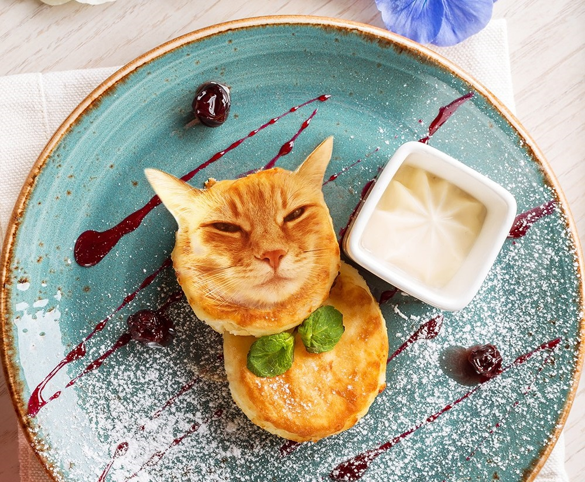

Просто текст

Урок 2. HTML, CSS
- Создать страницу с рассказом о чём угодно.
- Например, о себе или о любимом коте.
- Страница должна содержать заголовки, абзацы, картинки, списки и ссылки.
Способ приготовления
Сегодня мы с Вами приготовим HTML, CSS, которые можно быстро приготовить на завтрак для своей семьи.
- Смешиваем в миске ингредиенты: <Head>, <Body>, если есть яйца можно добавить соль. .
- Затем добавляем муку из тегов и также все тщательно перемешиваем.
- Формируем шарики из творожной массы.
- Четыре
- Шесть.
- Приятного аппетита!
Другие рецепты #Frontend# тут

Лучше всего сырники котиков подавать теплыми со сметаной и вишневым вареньем.